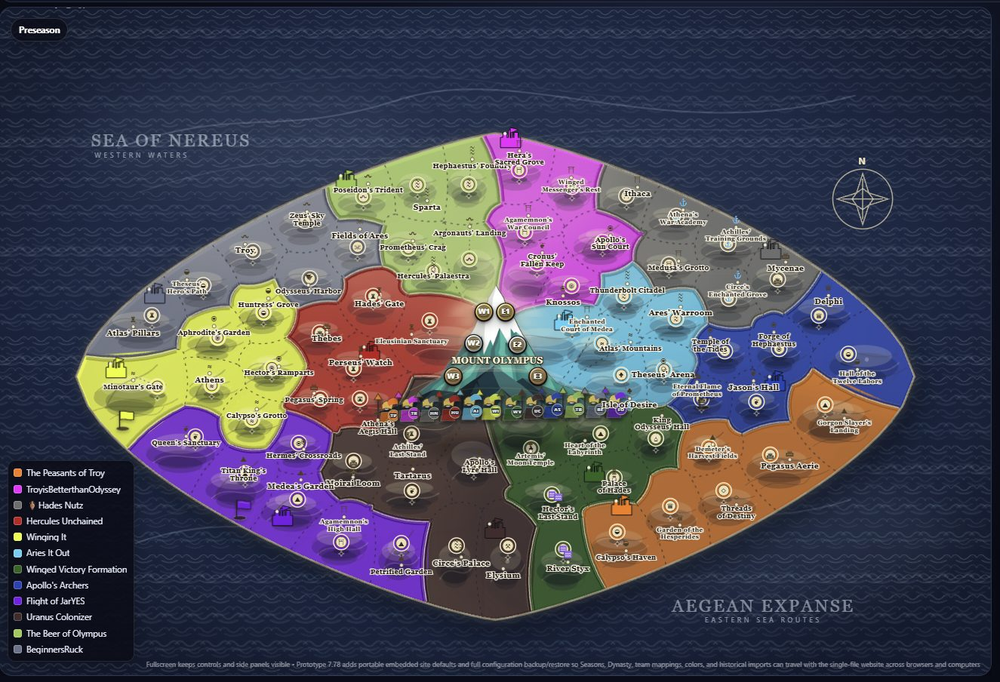

<!doctype html><html><head><meta charset="utf-8"><meta name="viewport" content="width=device-width,initial-scale=1,viewport-fit=cover"><title>League of Olympus Chronicle</title><style>html,body,#chronicle{margin:0;width:100%;height:100%;border:0;background:#fffef9}body{overflow:hidden}</style></head><body><iframe id="chronicle" title="League of Olympus Chronicle"></iframe><script>const f=document.getElementById('chronicle');const p=new URLSearchParams(location.search);f.src='./weekly-recap-base.html?'+p.toString()+(location.hash||'');f.onload=async()=>{const d=f.contentDocument;if(!d)return;try{const week=Number(p.get('week')||1);const chronMap=d.querySelector('#chronicle .fadeMap');if(chronMap){chronMap.innerHTML=`<div class="stateBadge sb">Before Week ${week}</div>`;}for(const src of ['./chronicle-enhancements.js?v=c02380d','./chronicle-static-map.js?v=89a9feb7']){const r=await fetch(src,{cache:'no-store'});if(!r.ok)throw new Error(src+' '+r.status);const s=d.createElement('script');s.textContent=await r.text();d.body.appendChild(s)}const badge=d.createElement('div');badge.textContent='CHRONICLE BUILD STATIC';badge.style.cssText='position:fixed;right:8px;bottom:8px;z-index:99999;background:#5a120f;color:#fff;padding:5px 8px;font:700 10px Arial;letter-spacing:.05em;opacity:.72;pointer-events:none';d.body.appendChild(badge)}catch(e){console.error(e)}if(location.hash){try{const b=d.querySelector('[data-tab="'+location.hash.slice(1)+'"]');if(b)b.click()}catch(e){}}};</script></body></html>